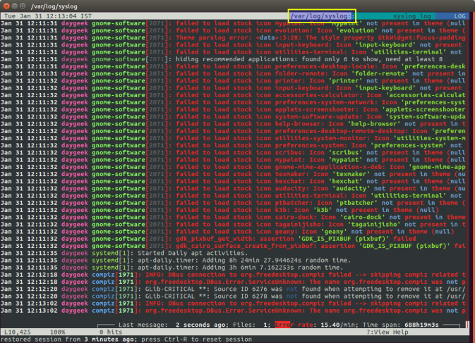

Невозможно представить себе пользователя и администратора сервера, или даже рабочей станции на основе Linux, который никогда не читал лог файлы. Операционная система и работающие приложения постоянно создают различные типы сообщений, которые регистрируются в различных файлах журналов. Умение определить нужный файл журнала и что искать в нем поможет существенно сэкономить время и быстрее устранить ошибку.
Журналирование является основным источником информации о работе системы и ее ошибках. В этом кратком руководстве рассмотрим основные аспекты журналирования операционной системы, структуру каталогов, программы для чтения и обзора логов.
Все файлы журналов, можно отнести к одной из следующих категорий:
Большинство же лог файлов содержится в директории /var/log.
Поддерживаемые уровни журналирования (приоритеты):
emerg - система неиспользуемая
alert - действие должно быть произведено немедленно
crit - условия критичности
err - условия ошибок
warn - условия предупреждений
notice - обычные, но значимые условия
info - информационный
debug - отладочные сообщения
(5:520)$ dmesg -l err
[1131424.604352] usb 1-1.1: 2:1: cannot get freq at ep 0x1
[1131424.666013] usb 1-1.1: 1:1: cannot get freq at ep 0x81
[1131424.749378] usb 1-1.1: 1:1: cannot get freq at ep 0x81
Для каждого дистрибутива будет отдельный журнал менеджера пакетов.
И немного бинарных журналов учета пользовательских сессий.
(5:535)$ sudo utmpdump /var/log/wtmp
[5] [02187] [l0 ] [ ] [4.0.5-gentoo ] [0.0.0.0 ] [Вт авг 11 16:50:07 2015]
[1] [00000] [~~ ] [shutdown] [4.0.5-gentoo ] [0.0.0.0 ] [Вт авг 11 16:50:08 2015]
[2] [00000] [~~ ] [reboot ] [3.18.12-gentoo ] [0.0.0.0 ] [Вт авг 11 16:50:57 2015]
[8] [00368] [rc ] [ ] [3.18.12-gentoo ] [0.0.0.0 ] [Вт авг 11 16:50:57 2015]
[1] [20019] [~~ ] [runlevel] [3.18.12-gentoo ] [0.0.0.0 ] [Вт авг 11 16:50:57 2015]
Так как операционная система, даже такая замечательная как Linux, сама по себе никакой ощутимой пользы не несет в себе, то скорее всего на сервере или рабочей станции будет крутится база данных, веб сервер, разнообразные приложения. Каждое приложения или служба может иметь свой собственный файл или каталог журналов событий и ошибок. Всех их естественно невозможно перечислить, лишь некоторые.
В домашнем каталоге пользователя могут находится журналы графических приложений, DE.
Initializing "kcm_input" : "kcminit_mouse"
Initializing "kcm_access" : "kcminit_access"
Initializing "kcm_kgamma" : "kcminit_kgamma"
QXcbConnection: XCB error: 3 (BadWindow), sequence: 181, resource id: 10486050, major code: 20 (GetProperty), minor code: 0
kf5.kcoreaddons.kaboutdata: Could not initialize the equivalent properties of Q*Application: no instance (yet) existing.
QXcbConnection: XCB error: 3 (BadWindow), sequence: 181, resource id: 10486050, major code: 20 (GetProperty), minor code: 0
Qt: Session management error: networkIdsList argument is NULL
Почти все знают об утилите less и команде tail -f. Также для этих целей сгодится редактор vim и файловый менеджер Midnight Commander. У всех есть свои недостатки: less неважно обрабатывает журналы с длинными строками, принимая их за бинарники. Midnight Commander годится только для беглого просмотра, когда нет необходимости искать по сложному шаблону и переходить помногу взад и вперед между совпадениями. Редактор vim понимает и подсвечивает синтаксис множества форматов, но если журнал часто обновляется, то появляются отвлекающие внимания сообщения об изменениях в файле. Впрочем это легко можно обойти с помощью <:view /path/to/file>.
Недавно я обнаружил еще одну годную и многообещающую, но слегка еще сыроватую, утилиту — lnav, в расшифровке Log File Navigator.

Установка пакета как обычно одной командой.
$ aptitude install lnav #Debian/Ubuntu/LinuxMint
$ yum install lnav #RedHat/CentOS
$ dnf install lnav #Fedora
$ emerge -av lnav #Gentoo, нужно добавить в файл package.accept_keywords
$ yaourt -S lnav #Arch
Навигатор журналов lnav понимает ряд форматов файлов.
Что в данном случае означает понимание форматов файлов? Фокус в том, что lnav больше чем утилита для просмотра текстовых файлов. Программа умеет кое что еще. Можно открывать несколько файлов сразу и переключаться между ними.
(5:471)$ sudo lnav /var/log/pm-powersave.log /var/log/pm-suspend.log
Программа умеет напрямую открывать архивный файл.
(5:471)$ lnav -r /var/log/Xorg.0.log.old.gz
Показывает гистограмму информативных сообщений, предупреждений и ошибок, если нажать клавишу <i>. Это с моего syslog-а.
Mon May 02 20:25:00 123 normal 3 errors 0 warnings 0 marks
Mon May 02 22:40:00 2 normal 0 errors 0 warnings 0 marks
Mon May 02 23:25:00 10 normal 0 errors 0 warnings 0 marks
Tue May 03 07:25:00 96 normal 3 errors 0 warnings 0 marks
Tue May 03 23:50:00 10 normal 0 errors 0 warnings 0 marks
Wed May 04 07:40:00 96 normal 3 errors 0 warnings 0 marks
Wed May 04 08:30:00 2 normal 0 errors 0 warnings 0 marks
Wed May 04 10:40:00 10 normal 0 errors 0 warnings 0 marks
Wed May 04 11:50:00 126 normal 2 errors 1 warnings 0 marks
Кроме этого поддерживается подсветка синтаксиса, дополнение по табу и разные полезности в статусной строке. К недостаткам можно отнести нестабильность поведения и зависания. Надеюсь lnav будет активно развиваться, очень полезная программа на мой взгляд.
Теги:
75,3k 116
12,4k 55
13,4k 70
21,3k 79
13,9k 8
7,1k 3
+23
BigData
Поделиться публикацией
Похожие публикации
Форматирование исходного кода в Linux средствами ClangFormat: проблемы и решение
+23 4,4k 68 31
Использование screen для логирования действий (аудита) пользователей в Linux
+29 21,9k 227 58
Логирование пользовательской активности в Linux
+5 13,2k 49 10